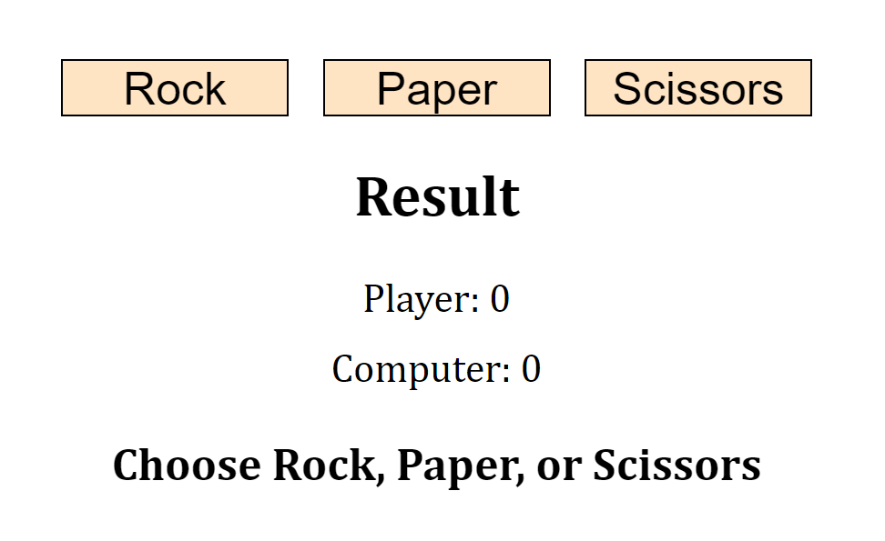
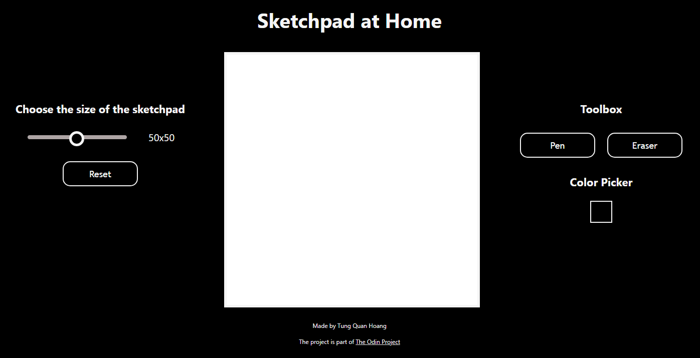

Data Analytics
Predicting Hanoi, Vietnam housing price using Artificial Neural Network (ANN) and Random Forest (RF) models for Regression
A Kaggle notebook in which I attempted to predict Hanoi - the capital of my homecountry Vietnam - housing price using two regression models: a simple, one layer artifical neural network (ANN) and a simple random forest (RF). As noted in the notebook itself, this project is just for me to learn more about various machine learning models and showcase my understanding through something that I am familiar with.
The ANN and and RF models perform quite well on the dataset, which contains around 7,000 observations and a large number of variables, with accuracies around 82-83%. One understanding that I have been able to gain after the project is that the RF model will be much better for smaller datasets since it is much simpler but gives similar results compared to the much more complex ANN model.
Click here to go to the full project page.
Africa's Journey of Happiness
This is a joint project by me with two other students at University of New South Wales (UNSW) to compete in an event known as the Tableau Dataviz Hackathon, organized by the UNSW Marketing Analytics Society together with the Data School. The goal of the competition is to use data from the World Happiness Report to showcase knowledge and expertise in processing and visualizing data.
Since the topic is open, our team chose to focus on African countries and explore the correlations between happiness and factors like corruption, freedom to make life choices, and social support.Thanks to (mostly) our outstanding design and insights, we won First place in the competition.
Click here to go to the full project page.
COMM 2501 Final Assignment: Africa Happiness Report
For term 3 2022 in the University of New South Wales (UNSW) schoolyear, I took a course called COMM2501: Data Visualization and Communication - which teaches students data visualization techniques and tools like R Studio and Tableau. For the final assignment of the course, students were asked to explore and visualize data from any topic and tell a story through them. My topic choice is an old friend - the World Happiness Report, and more specifically data on the happiness index of African countries.
Unlike the other project with the same topic, this set of visualizations gives a general overview of the happiness situation in Africa and concludes that the reason why African countries are unhappy is simply because of low living standards and low life expectancy.
Web Development
Rock, Paper, Scissors
As a way to improve my skills in computer science (and to put more stuff onto my resume), I decided to follow a friend's advice and follow The Odin Project - a website to learn web Development. As I follow the courses, I find that I really like this website and its courses mainly because it offers so many projects to practice my skills and to decorate my GitHub page.
Rock, Paper, Scissors is simply a website to play, well, rock, paper, and scissors. It is a playground for me to practice applying simple JavaScript logics to a website.
Click here to play the game.
Click here to go to the full project page.

Sketchpad at Home
Similar to Rock, Paper, Scissors, the Sketchpad at Home is simply a (slightly) worse version of a real drawing board, hence the name (which comes from this meme. The pro is that you can draw in any color you want. The con is that you have to draw with a mouse (unless you have a drawing tablet like a Wacom). To be honest, I quite like this project since I had quite a lot of fun practicing my CSS and JavaScript skills.
Click here to try and draw something.
Click here to go to the full project page.

Grocer-Free
An entry for the Unihack 2022. The idea for the website was originally from me, which is to make a website that help the common people to find the cheapest groceries in their area. At the time, I did not know much about web development so I left most of the work to my very talented friends and only helped with the documentations, styling of the website, and did the pitch myself. Unfortunately, we did not win any prize, but it was still a valuable experience for me as it was the first time I get involved deeply with web development and the MERN stack.
Click here to go to the full project page.
This portfolio website itself!
As you would have known, this website is itself a project. Unfortunately, I started this before finishing all my React lessons so I do not understand and am confident enough with React to use it to develop this website. I would definitely revisit this in the future if I am better.
Click here to go to the full project page.